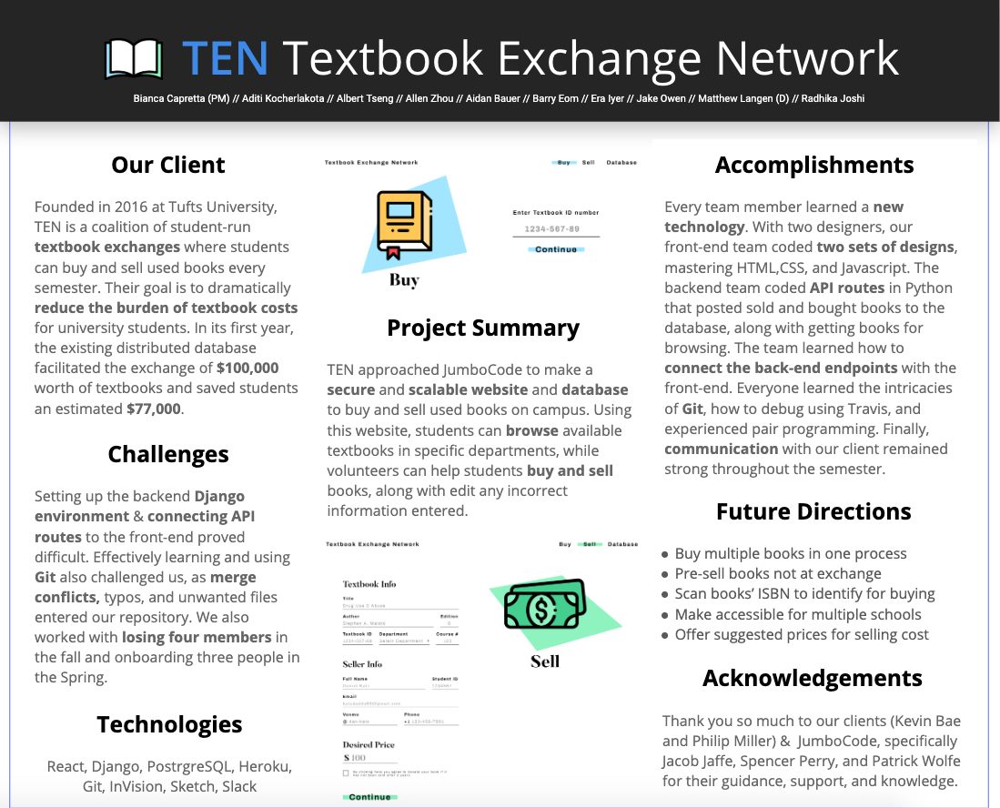
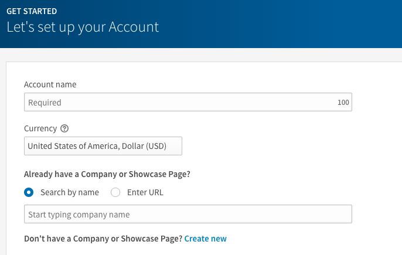
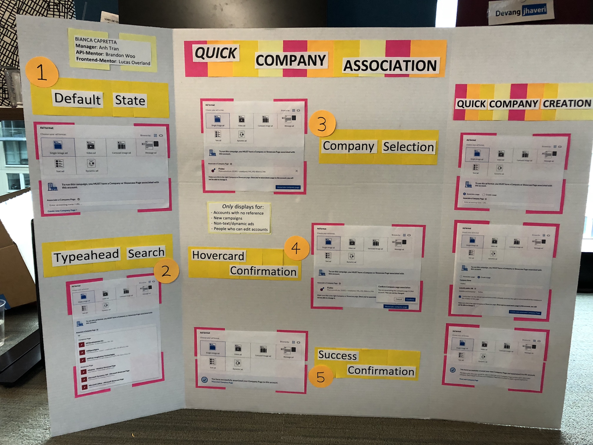
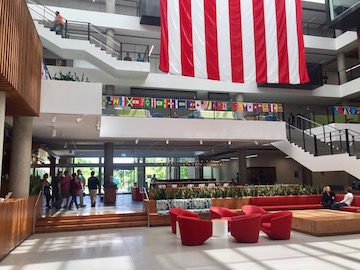
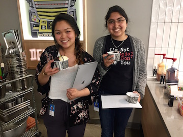

Spotify | Backend Engineer
Summer 2019 to Current - Boston, MA
After using Spotify for the first time in 2016 to listen to Hamilton's soundtrack, it immediately became my dream one day to work here. Everything I did in college was in pursuit to help my chances of landing that Spotify internship... Fast forward four years and I feel like I have the coolest job in the world.
Currently as a full-time Backend Engineer at Spotify, I am working on implementing the data-facing backend service for the 2020 Wrapped Campaign (your top songs, artists, genres, etc). Prior to embedding on this team, I worked on a squad focused around playlist curation for any mood or activity. I stepped up as the Road Manager for a test surrounding a new playlist concept: "Seed Mix". Our Seed Mix test involved creating new mixes for users upon completing Taste Onboarding, and comparing it side by side with Daily Mixes.
Prior to that project, I implemented the playlist logic for a test called, "Suggest to Create", which gave users a shelf of moods (Chill, Party, Workout, etc) to choose from to create new playlists. Aside from that, I helped my team migrate radio and playlist frameworks to new experimentation platforms and upgrade our pipelines. Outside of the work day to day, I lead the Boston office as a Women@ ERG Co-Lead and help coordinate weekly social presentations for co-workers to share their passions (from topics like Frisbee and A cappella to Emotional Robots and Poetry).
As a backend intern at Spotify during the summer of 2019, I joined a team working on playlists catered to user identities, such as Daily Mix. My summer project involved iterating upon a hack-week project consisting of two new playlist ideas: On Repeat & Repeat Rewind (mixes that would show you the music you can't stop listening to). I implemented new features, improved code quality, added unit and integration tests, fixed bugs in Java, and generally made it ready for production. Collaborating with Project and Data Curation, I made sure the playlists' heuristics matched the expected listening behavior. Finally, I setup an experiment with varying test cells on 6% of Spotify users, which led to an increase in user consumption.
Here's a playlist I've been curating myself if you're looking for new tunes!
JumboCode | Project Manager
Fall 2018 & Spring 2019 - Medford, MA
I served as a Project Manager in JumboCode, which is a student-run club dedicated to making websites and applications for non-profits while empowering students to work on out-of-school projects. I led a project to make a website for the Textbook Exchange Network (TEN). TEN is a coalition of student-run textbook exchanges on Boston university campuses where students can browse, buy, and sell used books every semester.
Found in 2016, TEN originally created their own version using Google Forms and Google Spreadsheets, but their implementation wasn’t secure nor scalable enough, especially when it came to expanding beyond just Tufts University. My JumboCode team of eight developers and two designers implemented a secure and scalable website and database to manage the buying and selling of books.
Filling this leadership position forced me to consider every part of the project from ground-up, like constructing a project plan, making a design doc, reflecting weekly on failures and successes, running hallway usability testing, running UI/UX testing, considering defects and vulnerabilities, and more.
Here's a little demo!
LinkedIn | Software Engineer Intern
Summer 2018 - San Francisco, CA
I interned within LinkedIn Marketing Solutions (LMS), specifically on its Campaign Manager which handles ad accounts for companies. My first project for the summer focused on associating one's company with the ad account when going through the new campaign creation flow. With the API already finished, I jumped in by writing a design document and implemented the front-end component.
 The second half of the internship focused on Company Creation. A user must associate a company page in the campaign creation flow, but if they have no existing company page, they need to create one on the spot. The original version redirected users to a new window to create this company page; however, it was found that 20% fewer users finished the campaign creation flow when having to create a company page. The new Company Creation design featured inline efforts to mitigate the attrition of transitioning to a new window. My contributions included implementing the API and designing the front-end.
Microsoft | Explorer Intern
Summer 2017 - Redmond, WA
I interned in the Explorer Program which gave me the opportunity to "explore" both the Program Manager position and the Software Developer role. I really enjoyed the creative aspect of being a PM and the problem-solving challenge of being a dev.
I worked on a team called Microsoft Sway which is part of the Office Suite. After picking a template and inputting desired text/pictures, Sway does all the design and layout for the user, creating a beautiful presentation or document immediately.
 I was grouped with two other interns and we were tasked with improving the discoverability of the navigation feature (also known as the Table of Contents). If someone wanted to get through a long Sway, it was our job to make the Table of Contents easier to see and use. The first four weeks were spent as Program Managers designing to make the navigation feature more discoverable. This time included a lot of talking to designers, presenting ideas, adjusting to fit what the users wanted, etc. The last eight weeks were spent developing the project in Typescript and C#.
We implemented the functionality for the pull-down button at the top of the left photo and the Table of Contents bar at the top of the screen on the right photo.


To see a better visual of my summer, check this presentation out.
Tufts University | Data Structures Teaching Assistant
Spring/Fall 2017 - Medford, MA
For the entirety of 2017, I was a lab leader for multiple computer laboratories each week for intermediate programming students in Data Structures. After meeting with other lab leaders once a week, I graded homework and provided individual assistance with class homework and projects during office hours.
Center for Engineering Education and Outreach | Software Engineer Intern
Summer 2016 | Medford, MA
Two summers ago I worked at the Center for Engineering Education and Outreach (CEEO) where I learned about:
- Arduinos
- Raspberry Pis
- GrovePi (Dexter Industries)
- Wifi and Bluetooth
- Internet of Things
- If-This-Then-That model
- Javacript and Python
For my first project of the summer, I was tasked with making an inventory system for the lab. I used Google Spreadsheet's powerful tool, the Script Editor, to create this project. I learned Javacript while creating it and learned that Google has some neat built-in functions.
Here is a look at the interface. See more about it on Github.

Later on in the summer, I worked with the GrovePi (while my partner worked with the EV3) and the idea of the Internet of Things. The purpose was to take physical inputs to produce virtual outputs with the devices, and vice versa. One example I created posted tweets when a button was pressed on the GrovePi. Another small project I worked livestreamed all the current tweets and a light sensor would flash when a specific hashtag appeared.
For a better visual, watch my youtube video. Check out my code on Github.